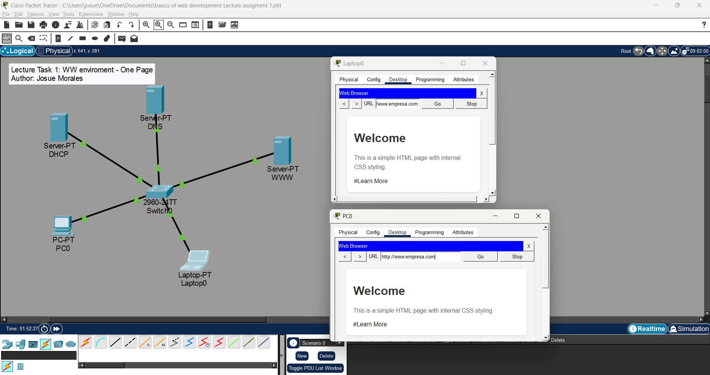

About the Assignment
The objective of this assignment was to simulate a WWW environment using Cisco Packet Tracer and understand how network devices and web services communicate with each other.
Assignment Result
The following screenshot shows my work submitted for Assignment S1.
